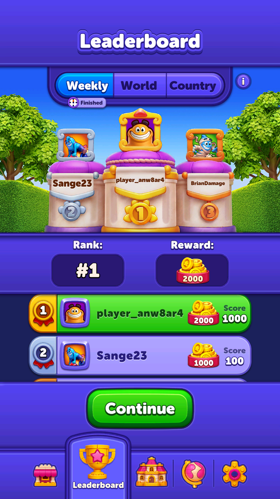

Weekly Tournament (giải tuần)
Giải đấu chu kỳ tuần, thưởng cao hơn giải chuỗi 24 giờ.
Mô tả
- Giải đấu chu kỳ tuần, thưởng cao hơn giải chuỗi 24 giờ.
- Mở sớm nhất trong các giải (từ màn 21).
Còn thiếu / chưa xác minh
Mở khóa & điểm vào
WeeklyTournamentConfigModel.FirstLevelToShow = 21, IsTournamentEnable = true.
Điểm vào:
- Biểu tượng giải tuần ở Home
- Popup tự mở khi về Home hoặc mở app nếu có kết quả
Cách hoạt động
- Cùng khuôn với các giải khác.
- WeeklyTournamentStateType có hai trạng thái xử lý lệch giờ rất rõ: NotFinishedAtBackendResponseButTimeIsUp (máy thấy hết giờ, server chưa chốt) và FinishedAtBackendResponseButTimeIsNotUp (server đã chốt, máy chưa thấy hết giờ).
- WeeklyTournamentLeaderboardController hiển thị bảng.
Luồng chi tiết theo code
Cùng khuôn với các giải khác. WeeklyTournamentStateType có hai trạng thái xử lý lệch giờ rất rõ: NotFinishedAtBackendResponseButTimeIsUp (máy thấy hết giờ, server chưa chốt) và FinishedAtBackendResponseButTimeIsNotUp (server đã chốt, máy chưa thấy hết giờ). WeeklyTournamentLeaderboardController hiển thị bảng.
Ảnh chụp màn hình (3)
3 ảnh chụp trong game (LDPlayer, bản 1006, tài khoản thử level 320 → 350 (07/10/2026)). Bấm ảnh để phóng to; nhãn UC dẫn tới use case tương ứng.


 500 coin; mình hạng 5, 0 điểm
500 coin; mình hạng 5, 0 điểm

2.000 coin. Nút Continue chưa được nhấn. Fixture: weekly-result.Phần thưởng
Phần thưởng theo code
| Ngữ cảnh | Phần thưởng | Evidence |
|---|---|---|
| Hạng 1 / 2 / 3 | 2.000 / 1.000 / 500 coin | WeeklyTournamentConfigModel.Rewards |
Số liệu chính
| Chỉ số | Giá trị | Nguồn |
|---|---|---|
| WeeklyTournamentConfigModel.FirstLevelToShow | 21 | WeeklyTournamentConfigModel.FirstLevelToShow — Assets/Resources/defaultconfigs/WeeklyTournamentConfigModel.json |
| WeeklyTournamentConfigModel.Rewards.FirstRankCoinRewardAmount | 2000 | WeeklyTournamentConfigModel.Rewards.FirstRankCoinRewardAmount — Assets/Resources/defaultconfigs/WeeklyTournamentConfigModel.json |
| WeeklyTournamentConfigModel.Rewards.SecondRankCoinRewardAmount | 1000 | WeeklyTournamentConfigModel.Rewards.SecondRankCoinRewardAmount — Assets/Resources/defaultconfigs/WeeklyTournamentConfigModel.json |
| WeeklyTournamentConfigModel.Rewards.ThirdRankCoinRewardAmount | 500 | WeeklyTournamentConfigModel.Rewards.ThirdRankCoinRewardAmount — Assets/Resources/defaultconfigs/WeeklyTournamentConfigModel.json |
Use case (4)
Bấm vào từng use case để mở. Mở/đóng tất cả
UC-01 Tích điểm trong tuần
Các bước- Cộng điểm
- Cập nhật hạng
| Actor | Player |
|---|---|
| Trigger | Thắng màn |
| Điều kiện | Giải đang chạy |
| Kết quả | Leo bảng xếp hạng tuần |
| Quy tắc / số liệu | - |
| Evidence | WeeklyTournamentService |
UC-02 Nhận thưởng cuối tuần
Các bước- StateType = Result
- Trao coin theo hạng
| Actor | Player |
|---|---|
| Trigger | Hết kỳ |
| Điều kiện | Có hạng |
| Kết quả | Nhận coin |
| Quy tắc / số liệu | Hạng 1: 2.000 coin, hạng 2: 1.000, hạng 3: 500. Không có thưởng cho hạng ngoài top 3 (khác với Streak và Arena) |
| Evidence | WeeklyTournamentConfigModel.Rewards |
UC-03 Tự mở popup kết quả
Các bước- Kiểm tra có kết quả chưa xem
- Mở popup
| Actor | System |
|---|---|
| Trigger | Về Home hoặc mở app khi có kết quả |
| Điều kiện | ShouldOpenAutomaticallyOnLobbyReturnOnResult / OnSessionStartOnResult = true |
| Kết quả | Người chơi không bỏ lỡ thưởng |
| Quy tắc / số liệu | Hai cờ riêng cho hai thời điểm |
| Evidence | WeeklyTournamentConfigModel |
UC-04 Xử lý lệch giờ máy và server
Các bước- NotFinishedAtBackendResponseButTimeIsUp: chờ server
- FinishedAtBackendResponseButTimeIsNotUp: tin server, chốt luôn
| Actor | System |
|---|---|
| Trigger | Hai bên không thống nhất |
| Điều kiện | - |
| Kết quả | Không hiện kết quả sai |
| Quy tắc / số liệu | Server luôn là nguồn chân lý |
| Evidence | enum WeeklyTournamentStateType |
Cấu hình (8)
Gộp mọi nguồn: const trong code, JSON mặc định trong Resources, bảng static, storage key, AB test, cờ server.
| Nguồn | Key | Kiểu | Giá trị | Ý nghĩa | Nơi định nghĩa |
|---|---|---|---|---|---|
| code const | WeeklyTournamentStateType | enum | InProgress=0, Result=1, Disable=2, InsufficientLevel=3, NoCachedTournament=4, NotFinishedAtBackendResponseButTimeIsUp=5, FinishedAtBackendResponseButTimeIsNotUp=6 | 7 trạng thái, hai trong số đó chỉ để xử lý lệch giờ | enum WeeklyTournamentStateType |
| json default | WeeklyTournamentConfigModel.IsTournamentEnable | bool | true | Assets/Resources/defaultconfigs/WeeklyTournamentConfigModel.json | |
| json default | WeeklyTournamentConfigModel.FirstLevelToShow | int | 21 | Assets/Resources/defaultconfigs/WeeklyTournamentConfigModel.json | |
| json default | WeeklyTournamentConfigModel.ShouldOpenAutomaticallyOnLobbyReturnOnResult | bool | true | Assets/Resources/defaultconfigs/WeeklyTournamentConfigModel.json | |
| json default | WeeklyTournamentConfigModel.ShouldOpenAutomaticallyOnSessionStartOnResult | bool | true | Assets/Resources/defaultconfigs/WeeklyTournamentConfigModel.json | |
| json default | WeeklyTournamentConfigModel.Rewards.FirstRankCoinRewardAmount | int | 2000 | Assets/Resources/defaultconfigs/WeeklyTournamentConfigModel.json | |
| json default | WeeklyTournamentConfigModel.Rewards.SecondRankCoinRewardAmount | int | 1000 | Assets/Resources/defaultconfigs/WeeklyTournamentConfigModel.json | |
| json default | WeeklyTournamentConfigModel.Rewards.ThirdRankCoinRewardAmount | int | 500 | Assets/Resources/defaultconfigs/WeeklyTournamentConfigModel.json |
Backend / server
| Command | Chiều | Mục đích |
|---|---|---|
weekly tournament | client↔server | kỳ giải và bảng xếp hạng |
Giao diện (UI)
| Element | Class | Mục đích |
|---|---|---|
| Bảng xếp hạng tuần | Modules.Contexts.Home.WeeklyTournament.WeeklyTournamentLeaderboardController | danh sách |
Storage keys
WeeklyTournament data
Chưa đọc được / ghi chú
- Cách tính điểm mỗi màn do backend quyết định.
Tính năng liên quan
Streak Race (Streak Tournament, giải chuỗi thắng 24 giờ) Masters Arena (giải đấu theo bộ màn riêng) Bảng xếp hạng thường trực (thế giới / quốc gia)
Nguồn đã đọc
- PseudoC/.../Home/WeeklyTournament/*.c
- Assets/Resources/defaultconfigs/WeeklyTournamentConfigModel.json